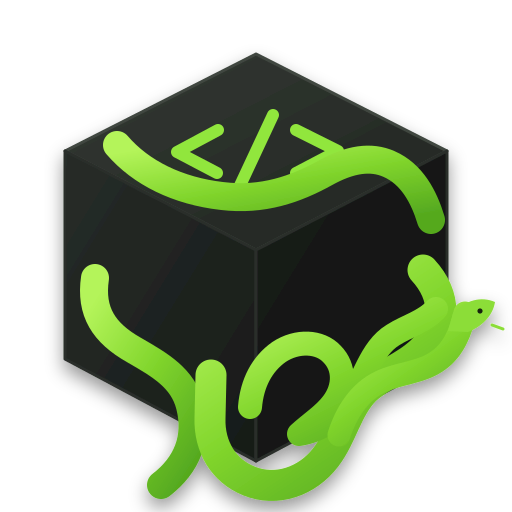

Independent by design
Snake source is interpreted directly by its own runtime. Programs aren’t translated into Python.
An independent programming language with a lexer, parser, AST, and tree-walking interpreter of its own.

Variables, expressions, and output. A small language with room to grow.
Read the syntax guidelet name = "Govind"
show "Hello, " + name
let x = 10
let y = 20
show x + yHello, Govind
30Snake’s core pieces are written for Snake, not borrowed from another language.
Snake source is interpreted directly by its own runtime. Programs aren’t translated into Python.
A hand-written lexer and recursive-descent parser turn source text into a program the runtime understands.
Language-specific syntax nodes give expressions and statements a clear structure.
The interpreter evaluates the parsed syntax, with source-located errors and a default execution step limit.
Use let, show, if … then, and to … do to write programs in Snake.
The v1.1.0 Windows x64 release bundles the runtime, so end users don’t need Python installed.
Print a message with the show statement.
show "Hello, Snake!"Loop over a range and update a variable.
let total = 0
for n in range(1, 6) do
total = total + n
end
show totalSnake is an independent programming language project created by Govind Evern. Explore how it works, try the examples, or follow the project on GitHub.